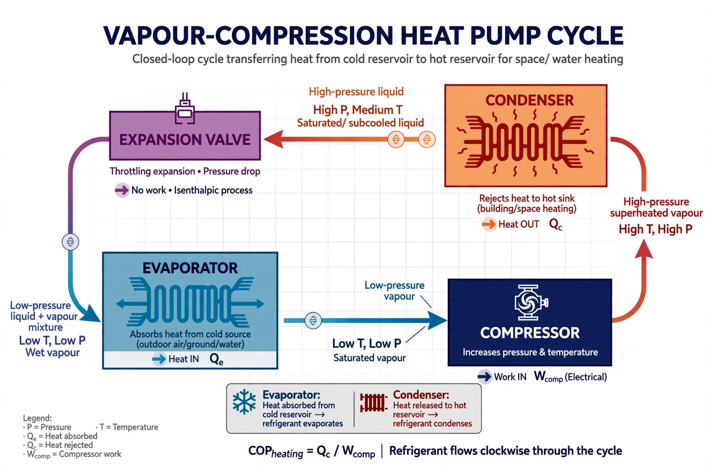

A heat pump is a device that uses work to transfer heat from a cool space to a warm space by transferring thermal energy using a refrigeration cycle, reversing the natural direction of spontaneous heat flow. Existing configurations can be categorised as air-source, ground-source (geothermal), and water-source heat pumps.

A heat pump runs the same vapour-compression cycle as a refrigerator or air conditioner, but is designed to deliver useful heat to the indoor (hot) side rather than simply removing it. Because it moves heat instead of generating it by combustion or resistance, a heat pump typically delivers three to five units of heat per unit of electricity consumed. Its efficiency is measured by the coefficient of performance (COP); seasonal performance is often quoted as the SCOP or HSPF.
The theoretical basis goes back to Lord Kelvin, who proposed a "heat multiplier" in 1852. Practical residential systems became widespread from the mid-20th century.
Heat pumps heat and cool buildings, provide domestic hot water, and dry laundry (heat-pump tumble dryers). Because they can replace gas and oil boilers while running on increasingly low-carbon electricity, the International Energy Agency identifies them as a central technology for decarbonising heating.
From Wikipedia, the free encyclopedia.